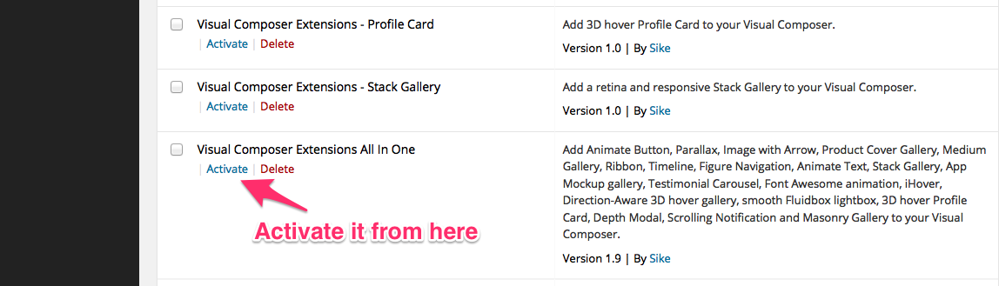
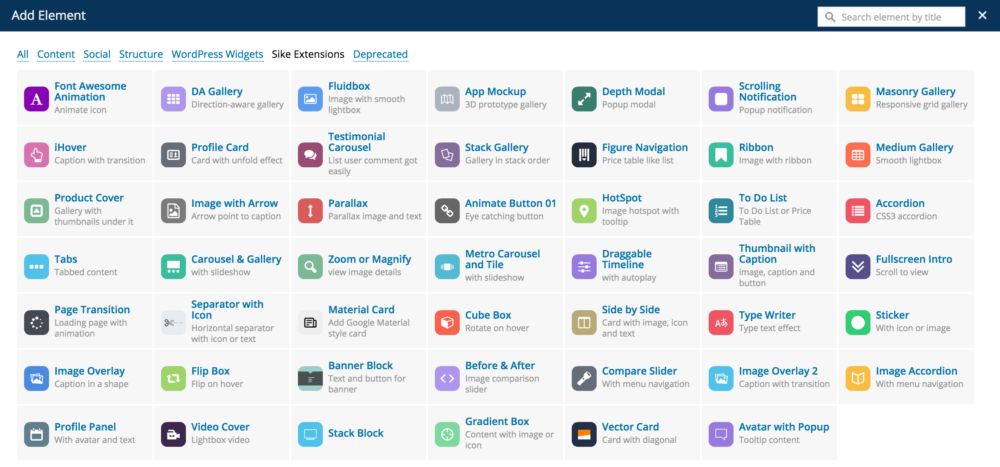
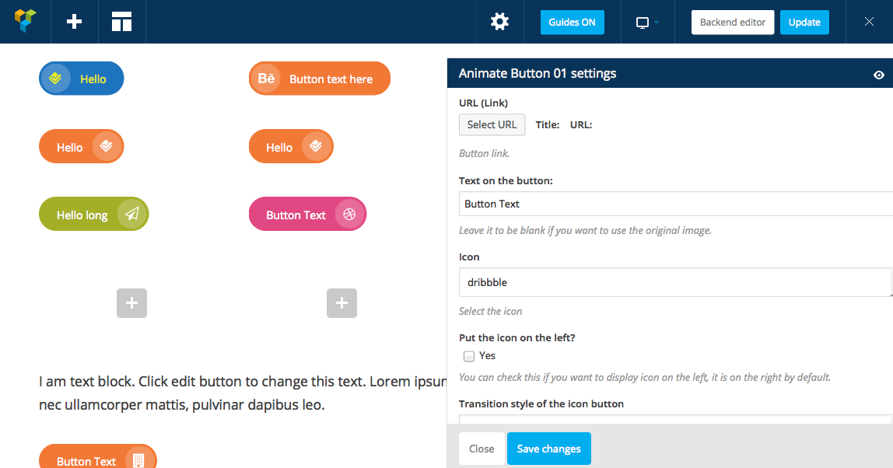
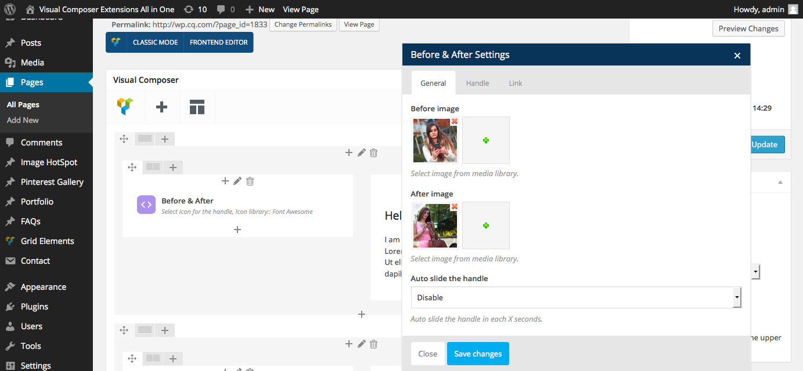

“Visual Composer Extensions All In One” Documentation by “Sike”
“Visual Composer Extensions All In One”
Created: May 11 2014
By: Sike
Contact
Thank you for purchasing. If you have any question with this plugin, you can drop me a line via the contact form in my profile page. And I appreciate if you can rate my item in the download section of codecanyon, thanks!
Table of Contents
A) Installation and Usage - top
How to install.
- First of all, make sure Visual Composer plugin to be installed and activated on your site.
Then unzip the vc-extensions-bundle.zip and upload the folder to the /wp-content/plugins/ directory, via FTP.
Or upload the vc-extensions-bundle.zip directly via WordPress's built in plugin uploader, browse and then upload(recommended).
- Activate the plugin through the 'Plugins' menu in WordPress 
- After installing, you can’t see the add-ons and the Sike Extensions menu?
See how to solve it in the FAQ
How to use the plugin.
- After activating it, you can access the extension under the Sike Extensions menu of Visual Composer: 
- The frontend looks like:
 The backend looks like:
 In the edit area, you can choose the image, image size, image retina, icon, icon color, icon tooltip, icon link etc, each extension have individual setting for it.
- I'll keep updating a FAQ in the item page, you can follow it here: http://codecanyon.net/item/visual-composer-extensions-all-in-one/7731868/support
B) Credits - top
Tooltipster http://iamceege.github.io/tooltipster/
Font Awesome http://fortawesome.github.io/Font-Awesome/
Font Awesome Animation https://github.com/l-lin/font-awesome-animation
Fluidbox http://terrymun.github.io/Fluidbox/
DA Gallery (converted to CSS/jQuery by me) http://codepen.io/noeldelgado/pen/pGwFx
avgrund http://lab.hakim.se/avgrund
animate.css http://daneden.github.io/animate.css/
wookmark http://www.wookmark.com/jquery-plugin
boxer http://formstone.it/components/boxer
http://codepen.io/samzhao/pen/LFEKh (implemented to jQuery plugin with more options by me)
iHover https://github.com/gudh/ihover
http://codepen.io/andythayer/pen/vuIsp
http://jsdo.it/lebedev/rwes
http://jsdo.it/teetteet/8KKG
http://codepen.io/Ediru/pen/Frgye
http://codepen.io/pederan/pen/Hheuy
transit http://ricostacruz.com/jquery.transit/
http://codepen.io/Hornebom/pen/DAagr add more options by me.
http://codepen.io/yoannhel/pen/fHGzs
http://codepen.io/geeves/pen/BdmEb.
http://codepen.io/CoffeeCupDrummer/pen/qmIdx
http://codepen.io/MightyShaban/pen/zLykK
Photoset Grid http://stylehatch.github.io/photoset-grid/
Metro UI CSS http://metroui.org.ua
http://stickerjs.cmiscm.com/
https://github.com/Zhouzi/TheaterJS
http://git.blivesta.com/animsition/
D) Main features: - top
- CSS3 transition, note some of the feature(like 3D profile card, 3D float App Mockup) only works with modern browser like Chrome, Firefox, Safari, Opera and IE10+.
- Optional thumbnail, thumbnail size, optional icons, icon tooltip, icon color, icon position, icon link, tooltip position etc, each extension have individual setting for it, give you all the flexibility to update the content.
- Retina ready, you can choose the thumbnail to display in retina mode.
- Add more extensions for free in the future update.
- Extend the Visual Composer, work fine with the VC in a theme or VC installed as a plugin.
- Compatible with latest jQuery and latest WordPress.
- Enqueue the js and css only when needed. Keep WordPress page size smaller.
- FAQ and source code are included in the package. Free update in the future.